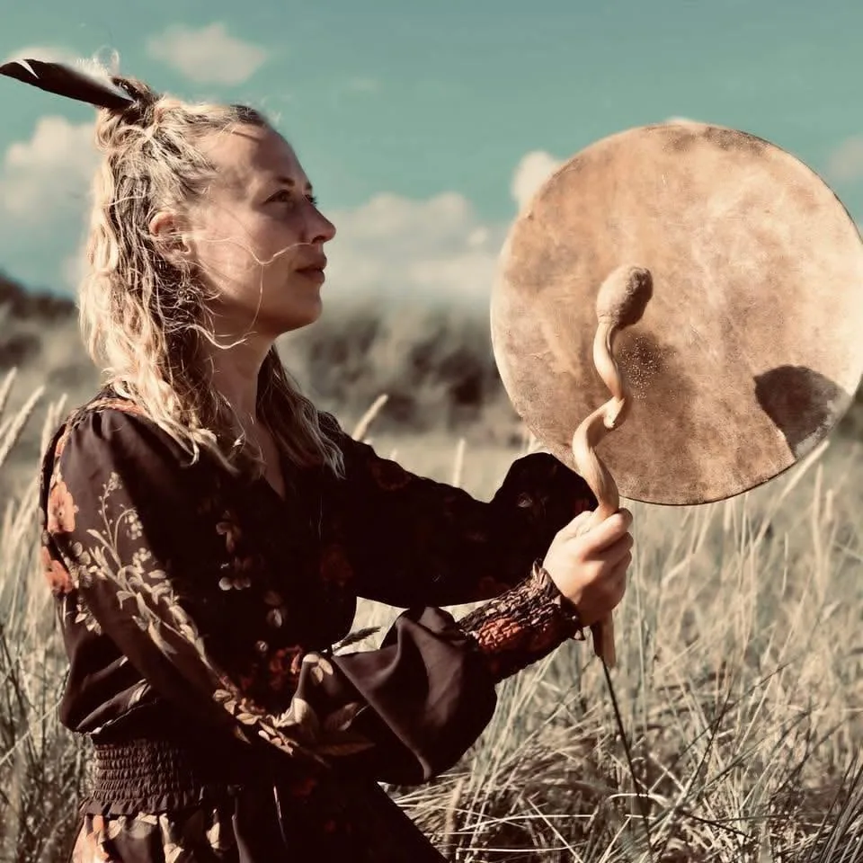
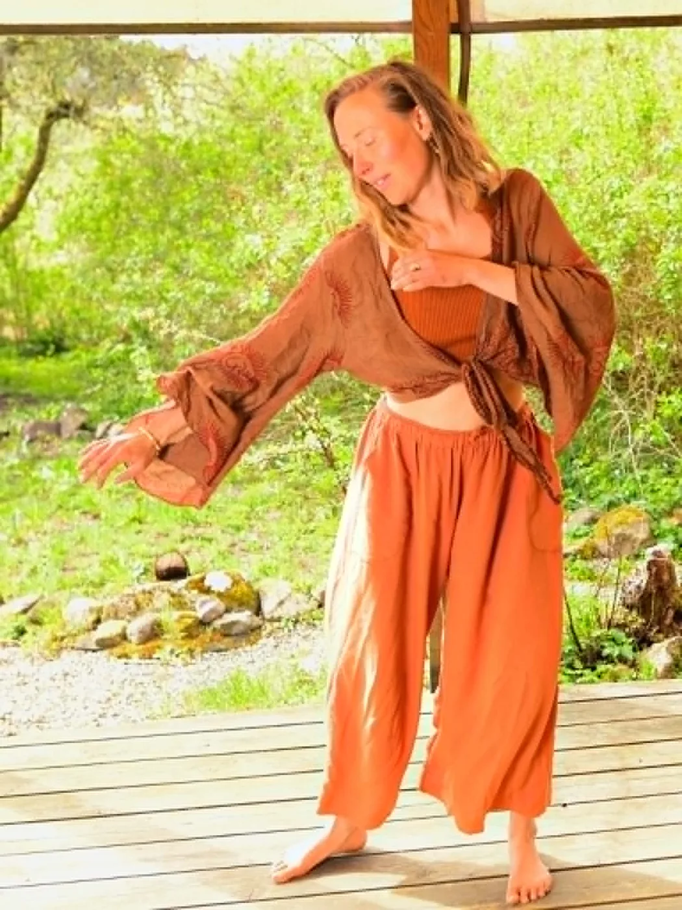
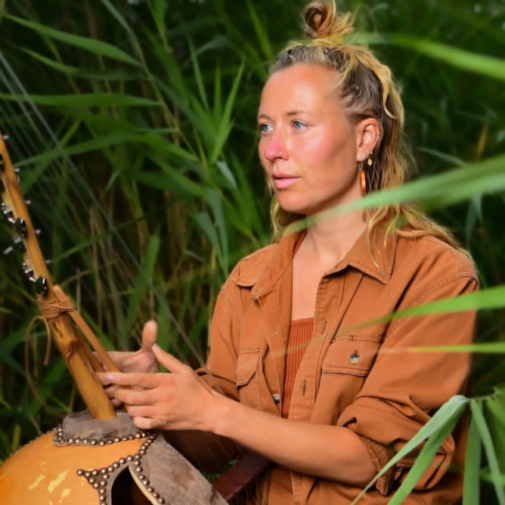
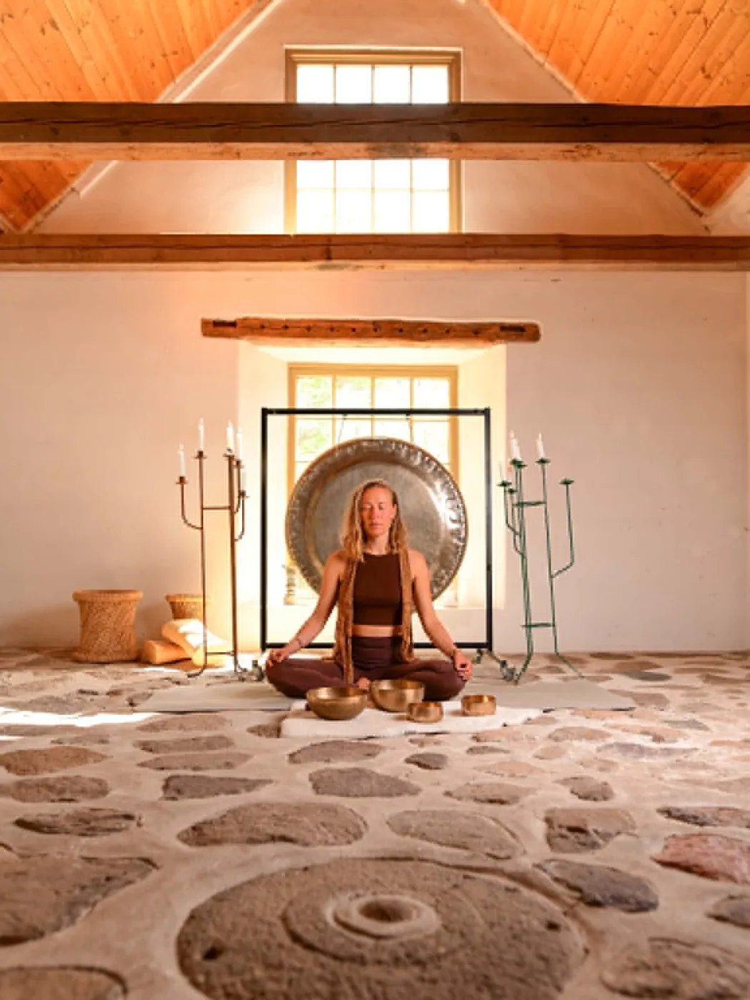
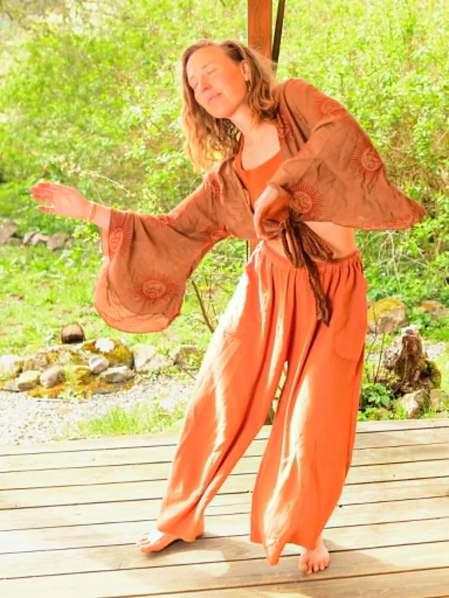
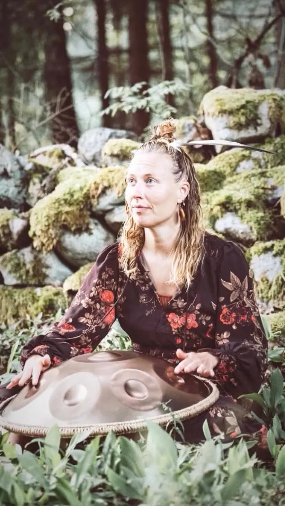
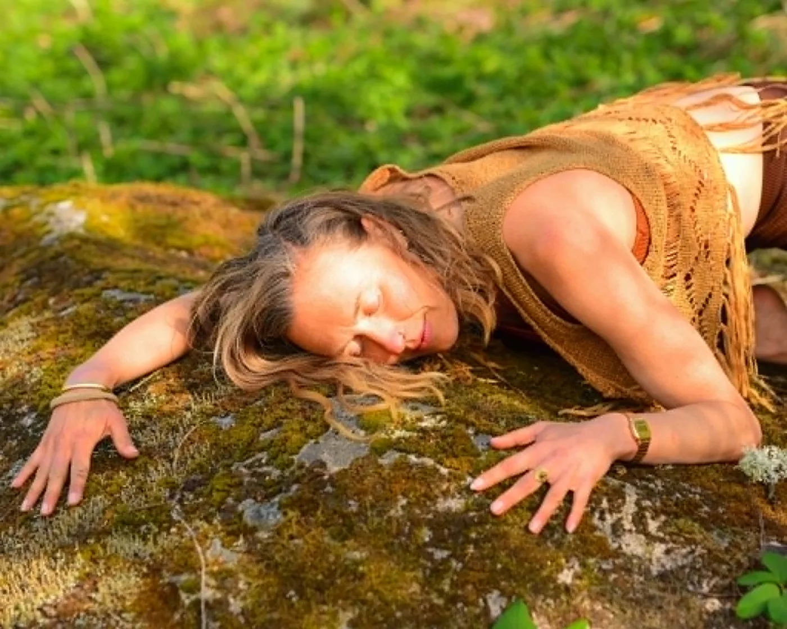

En nykter dans- och musikupplevelse där vi möts i rörelse, närvaro och gemenskap — och startar dagen i kroppen.
SoulBeat är för dig som vill landa i kroppen, släppa prestation och dela energi med andra människor genom musik, rörelse och närvaro.

SoulBeat är en nykter dans- och musikupplevelse där vi möts i rörelse, närvaro och gemenskap. Vi skapar en trygg och levande plats för fri dans, rytm, meditation och community.
Vi ses en fredagsmorgon i månaden, kl 07–11. Ett sätt att starta dagen så bra som möjligt — fulladdad inför både jobbdagen och helgen.
SoulBeat är inspirerat av Ecstatic Dance, morgonritualer och communitybaserade musikupplevelser.

Börja i kroppen, inte i huvudet.

Louna leder ljudresan och meditationen på SoulBeat. Genom shamantrumma, kora, handpan och gong väver hon en levande spellista som bär dig från första steget till den sista andningen.
Det är musik att röra sig till, landa i och vila i — en trygg ram för fri dans, närvaro och gemenskap.
Från mjuk landning till gemenskap — en resa genom morgonen, klar inför dagen.

Vi börjar med incheckning, mjuk landning och en trygg introduktion.
En enkel gemensam start där vi sätter tonen för morgonen.
Fri dans till en genomtänkt spellista eller DJ-set.
Vi landar tillsammans genom stillhet, andning eller guidning.
Efteråt finns möjlighet att hänga kvar, prata, dricka te och mötas.
För dig som gillar dans, rörelse, musik och community — eller för dig som är nyfiken på att möta människor på ett mer närvarande och lekfullt sätt.
Aldrig upplevt något liknande. Lounas dansresa fick mig att känna kontakt med källan och mitt ursprung. Jag kunde känna frekvenser och vibration i hela min kropp!
Det är första gången någonsin som jag har dansat bara för mig. Jag har aldrig vågat dansa öppet bland människor innan. Så tryggt space och jag vågade vara vild!
Jag har väntat hela mitt liv på den här dagen. Jag vågade släppa taget helt och brydde mig inte om att det var människor runt omkring. Magiskt!
Premiären är fredag 25 september, kl 07–11 — och sen återkommer vi en fredagsmorgon i månaden. Du hinner landa, dansa och ladda, och ändå komma i tid till jobbet. Vi håller det enkelt: bra musik, trygg känsla, bra ljud.
SoulBeat ska kännas ceremoniellt men modernt — en puls av rörelse, gemenskap och energi.



SoulBeat hålls en fredagsmorgon i månaden, kl 07–11. Tanken är att starta dagen så bra som möjligt — du går därifrån fulladdad inför både jobbdagen och helgen.
Nej. SoulBeat handlar om fri dans utan prestation — det finns inga steg att lära sig och inget rätt eller fel. Du rör dig som det känns.
Ja, helt nyktert. Energin kommer från musiken, rörelsen och gemenskapen — inte från alkohol.
Bekväma kläder du kan röra dig i, en vattenflaska och gärna ett extra lager för nedvarvningen. Annars bara dig själv och din närvaro.
Absolut. Många kommer på egen hand — SoulBeat är byggt kring gemenskap, så det är lätt att mötas även om du kommer ensam.